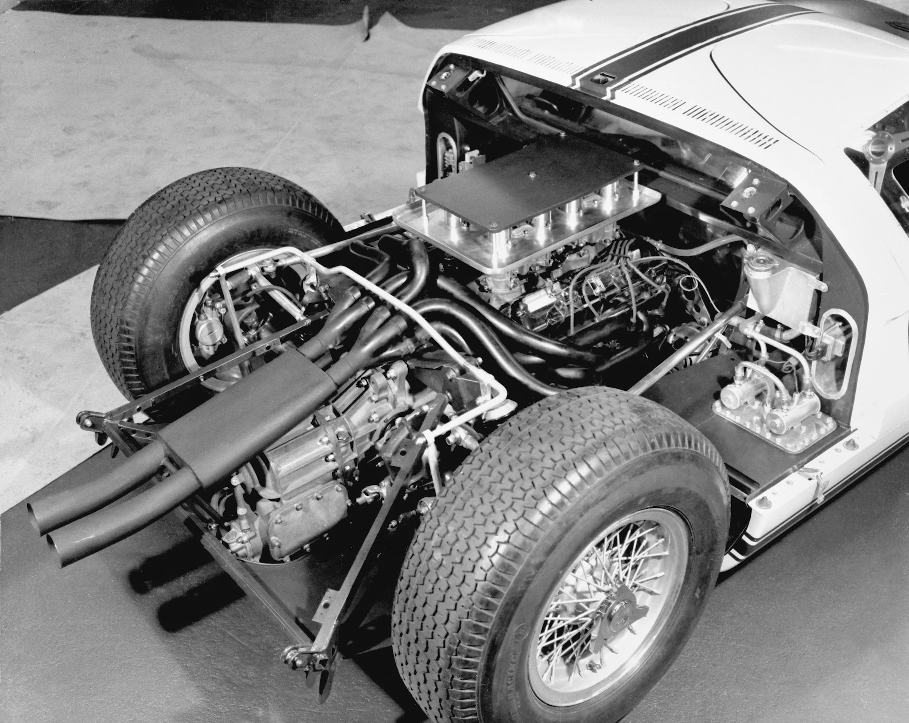

La Historia del Ford GT: De Le Mans al MK IV
El Origen: "La Guerra Ford-Ferrari"
Todo empezó por un "no". Henry Ford II intentó comprar Ferrari, pero Enzo Ferrari se arrepintió en el último segundo. Enfurecido, Ford ordenó construir un coche que humillara a los italianos en su propio juego: las 24 Horas de Le Mans.
El Hito: Tras un inicio difícil, el GT40 logró lo impensable: ganar Le Mans cuatro veces seguidas (1966-1969).
La Curiosidad: Se llamaba "40" porque medía exactamente 40 pulgadas (101.6 cm) de altura.

La Gloria: El Dominio de los 7.0 Litros
Ford reclutó a Carroll Shelby, quien rediseñó el coche instalando un masivo motor V8 de 7.0 litros (427 pulgadas cúbicas).
1966: El Ford GT40 Mk II logró el histórico triplete (1º, 2º y 3º puesto) en Le Mans.
Innovación: Fue el primer coche en usar frenos de disco de cambio rápido y pruebas de túnel de viento extensivas.
Legado: El GT40 ganó cuatro años consecutivos, convirtiéndose en el único coche estadounidense en ganar Le Mans de forma absoluta.

El Homenaje: El Superdeportivo Analógico
Para el centenario de Ford, la marca resucitó el nombre con el Ford GT. Aunque visualmente era casi idéntico al original, era más alto y ancho para ser usable en la calle.
1966: El Ford GT40 Mk II logró el histórico triplete (1º, 2º y 3º puesto) en Le Mans.
Mecánica: Un V8 de 5.4L con supercargador que entregaba 550 hp y una transmisión manual de 6 velocidades.
Importancia: Se convirtió en un objeto de culto instantáneo por carecer de asistencias electrónicas modernas, ofreciendo una experiencia de conducción pura y "mecánica".

La Revolución: Fibra de Carbono y V6 EcoBoost
Ford sorprendió al mundo al anunciar un nuevo GT que rompía con la tradición del V8. En su lugar, montó un V6 Twin-Turbo de 3.5L basado en sus camionetas F-150, pero optimizado para la pista.
Aerodinámica: El diseño del túnel central (fuselaje estrecho) permitía que el aire fluyera a través del coche, no solo alrededor.
Tecnología: Introdujo una suspensión hidráulica que bajaba el coche 50 mm en milisegundos para el "Modo Pista" y un chasis de fibra de carbono ultra rígido.

5. El Cénit: El Mk IV
Como despedida final, Ford lanzó el GT Mk IV, una versión exclusiva para circuitos que elimina todas las restricciones de las normativas de calle o de las ligas de carreras oficiales (Le Mans/IMSA).
Avances Finales: Carrocería "Longtail" para máxima estabilidad, transmisión de carreras secuencial y más de 800 hp.
Exclusividad: Solo se produjeron 67 unidades (en honor al año 1967) con un precio superior a los 1.7 millones de dólares, representando el punto máximo de evolución en la historia de la saga.